Auburn University
Behnam Rasoolian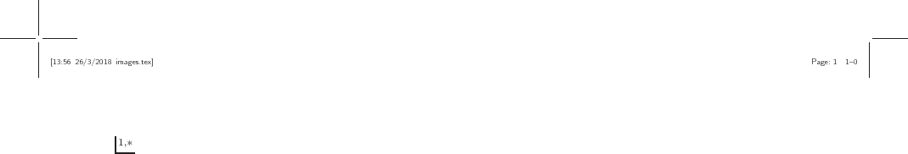,
Debswapna Bhattacharya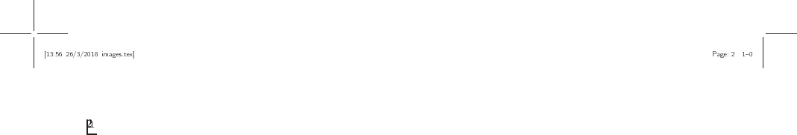

Auburn University
In this study, we plan to find dissimilarities between normal cells and cancerous cells, through investigating HiC contact maps. We suspect that there are systematic differences between how chromosomes are structured between normal cells and cancerous cells. we Ideally, it is desirable to compare 3D structures of cell in order to make such comparisons. However, the main challenge that we face is that 3D structure of a cell is not readily available. Based on [1], fluorescence in situ hybridizaiton (FISH) is used for investigating 3D configuration of chromosomes. However, this method can only be used locally and cannot map the whole structure of the chromosomes. In orther to find dissimilarities in the 3D structure of chromosomes, we used HiC dataset. The HiC method, which was developed by [2], captures interactions between chromosomal fragments in kilobase resolution. Based on HiC data, an interaction frequency (IF) matrix can be developed between loci at a desired resolution. A cell in an interaction frequency matrix captures the number of interaction detected in HiC dataset between locus and locus 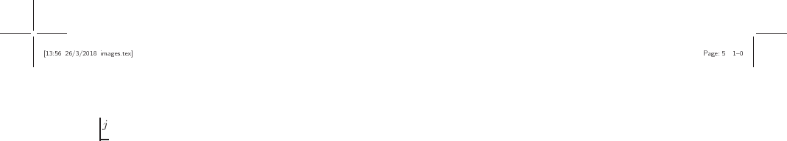 in the genome. An interaction matrix can be used to develop both inter- and intra-chromosomal interaction matrices. We believe differences in interaction matrices can be found between normal cells and cancerous ones.
Graphlet comparison is a novel method used to compare large networks in order to find local similarities in them. Authors of [3] provide a new measure of PPI network comparison based on 73 constraints. This is used in order to compare two large networks in order to detect similarities.
[4]
provide heuristics to compare two nodes based on some feature
(or signature) vectors, which is a 73-dimensional vector
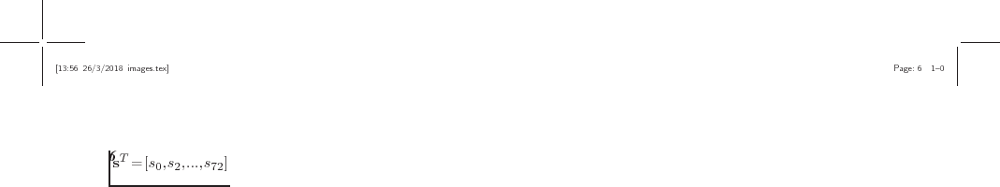 where denotes the number of nodes in
the network that are part of an orbit .
Important Result: Proteins with similar surroundings perform
similar functions.
In [5], the same author investigates
cancer-causing genes to find similarities in their signatures. After
clustering the genes based on signature similarity criteria,
some clusters contain a lot of cancerous genes.
They use 4 different clustering methods with varying parameters to cluster
the proteins. They then predict the cancer-relatedness of a protein
using
an enrichment criteria
 where 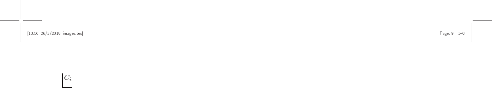 is the cluster
where protein belongs and is the number of cancer-causing
proteins in and 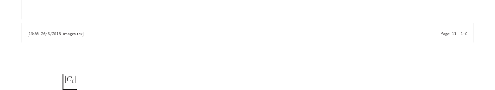 is the size of .
where 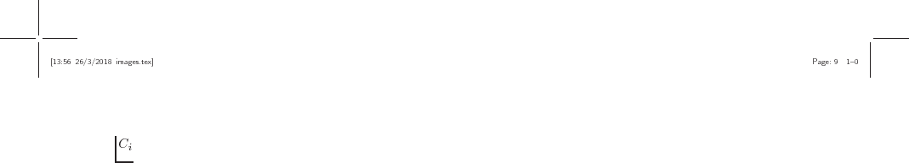 is the cluster
where protein belongs and is the number of cancer-causing
proteins in and 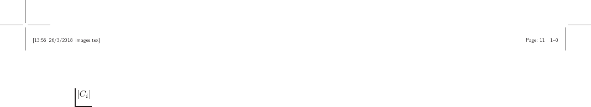 is the size of .
The authors of [6] generalized the idea of graphlets to
ordered graphs were the nodes are labeled in ascending order.
As can be viewed, there are a total of 14 orbits for graphlets of size
2 and 3 since the label of graphlets is also included in toplogy.
In the new definition, 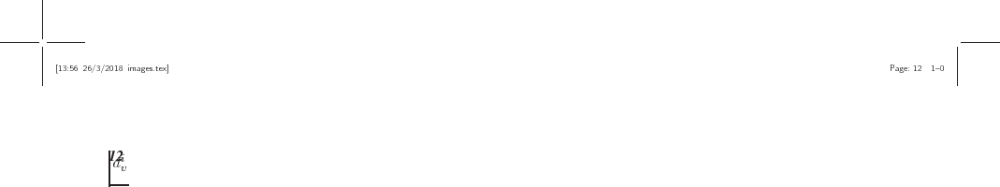 denotes the number of orbit touches
node 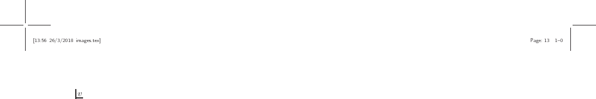. Each node, is then assigned a vector of length 14
 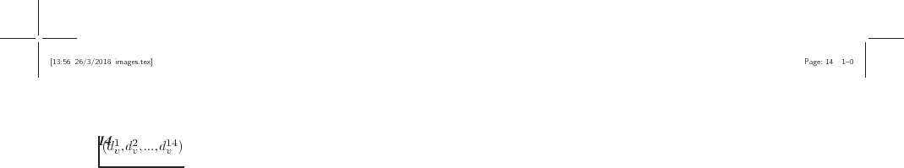
and similarity of two nodes in two contact maps can be compared by
how geometrically close their corresponding vectors are.
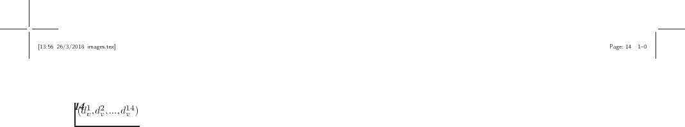
and similarity of two nodes in two contact maps can be compared by
how geometrically close their corresponding vectors are.
We denote the set of all contact maps in cell line 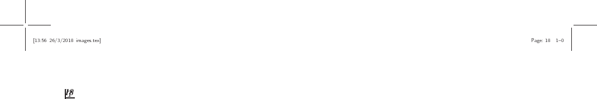 with 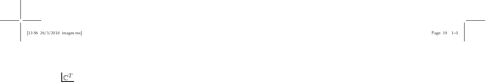. If no particular cell line is addressed, the subscripts are dropped. Any arbitrary member of is denoted by , where and (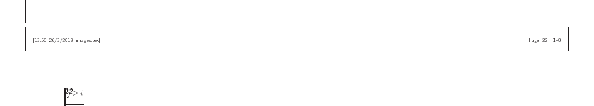) represent the two chromosomes involved. In human cells this set contains a total of 276 contact maps, 23 of which are intra-chromosomal and the rest are inter-chromosomal. For ease of representations, intra-chromosomal contact maps are distinguished by a single superscript, so we have 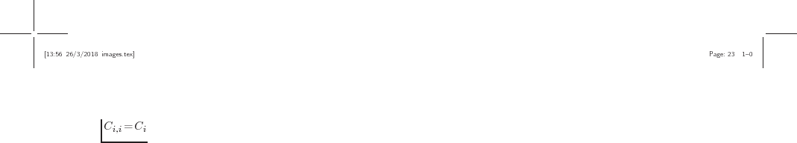.
We denote the number of loci in a chromosome by 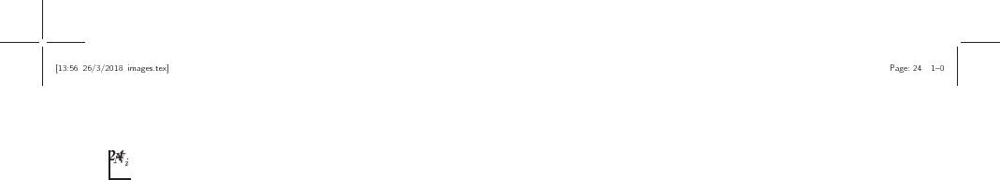.
The set of all loci involved in contact map is denoted
by  .
In intra-chromosomal contact maps,
.
In intra-chromosomal contact maps,  containts only the
loci of that particular chromosome (
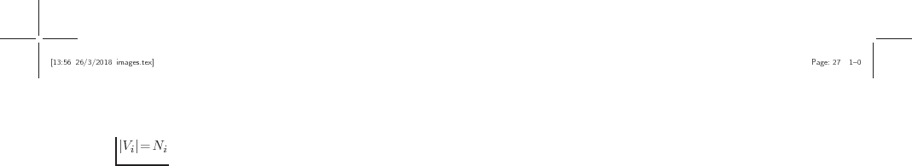), while in
inter-chromosomal contact maps contains the loci in
the both of chromosomes involved (
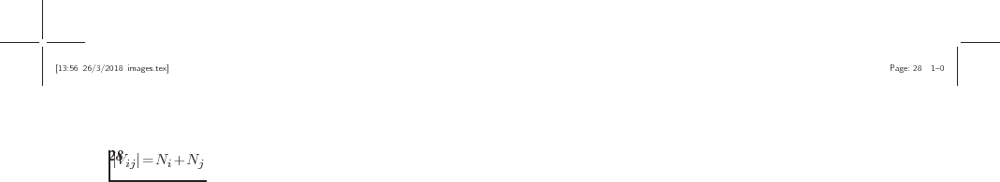).
containts only the
loci of that particular chromosome (
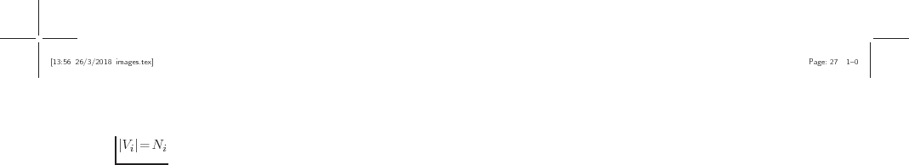), while in
inter-chromosomal contact maps contains the loci in
the both of chromosomes involved (
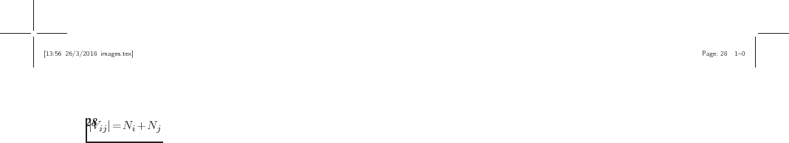).
When thresholding contact maps, it is necessary to make sure that both global and local features are maintained. We could consider thresholding the contact maps by simply setting values above a fixed value to one and the rest to zero; However, in practice, this method resulted in graphs that capture the local structure of the contact maps poorly. This is because intensities follow an exponential distribution with a mean close to zero with a few very larges values that correspond to interactions along or close to the main diagonal of the contact maps. Thus, picking relatively large numbers would result in ignoring interactions that are far from the main diagonal while picking small values will lead to capturing too many (insignificant) interactions.
In order to threshold the matrix so that both global and local patterns are
captured, we borrowed the concept of adaptive thresholding from image
processing context. In this method, in order to be set, a pixel should have
an intensity larger than the average of non-zero intensities in its
neighborhood. The neighborhood is defined by a sliding kernel
that passes through the contact map with the pixel at its middle at
each step. Figure  demonstrates result of
this thresholding approach for intra-chromosomal contact maps of chromosome 1.
Refer to supplementary material for all 23 interchromosomal thresholding
results.
demonstrates result of
this thresholding approach for intra-chromosomal contact maps of chromosome 1.
Refer to supplementary material for all 23 interchromosomal thresholding
results.
For a particular 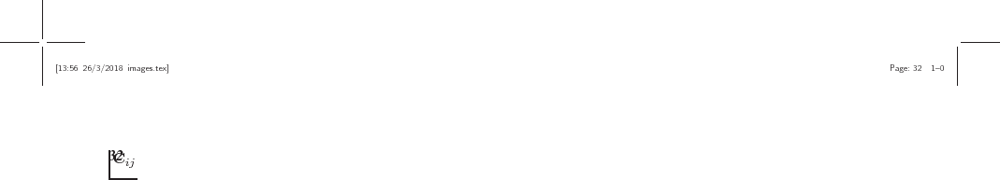, we denote 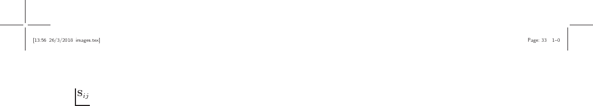 as its signature matrix. Each cell 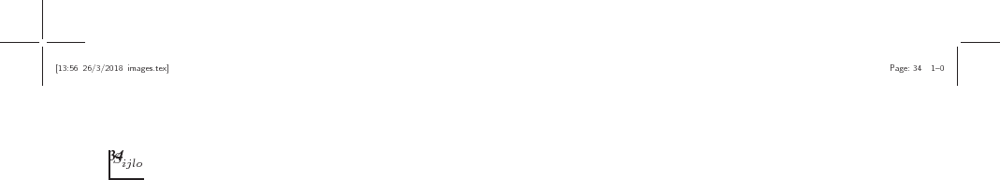 in captures how many times loci in occured as part of orbit .
We divided the task of graphlet comparison into two parts: first we compare graphlets from each contact map in normal cell lines (MIT) with the same contact maps in the other three Leukemic cells. Second we compare contact maps in a similar way but this time only between leukemic cells. In the former case, the null hypothesis is that there is no difference between contact maps of normal cells and leukemic cells and in the latter case, the null hypotheis is that there is no difference between different leukemic cells.
We consider two measures of difference when comparing contact map graphlets across cell lines. The first measure is signature distance vectors between each contact map of two cell lines. Let 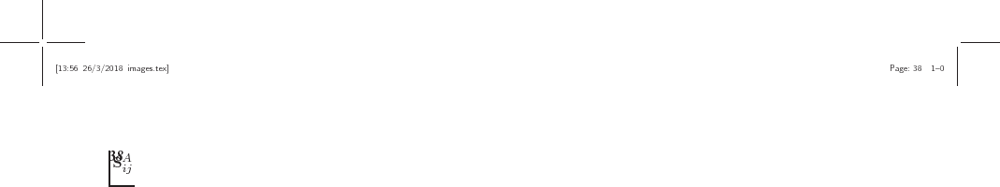 and 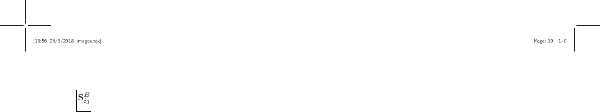 be signature matrices corresponding to cells A and B respectively, then we can caclulate the distance between each loci (row) in 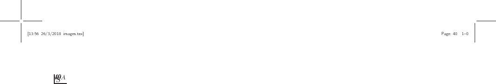 and the the same loci in using the following formula from [3]:
This process is illustrated in Figure  .
Using this distance measure, we can quantify how two loci are close to
each other in terms of local neighborhood between the two contact maps.
.
Using this distance measure, we can quantify how two loci are close to
each other in terms of local neighborhood between the two contact maps.
The second measure of comparison that we use captures how similar two orbits are in terms of their count frequencies across loci between two contact maps. Each column in can provide information regarding the frequency distribution of orbits throughout the contact map . We can find how similar these distributions are to each other using correlation measures. These correlations can be calculated as the following:
For each contact map, calculated similarity between orbit distributions using Pearson's r correlation, which is computationally efficient. However, pearson's r might not be able to capture non-functional relationships between distributions. As a result, we also used Maximal Information Coefficient (MIC) [7] in order to compare correlations. MIC calculates mutual information (MI) between two distributions, but utilizes dynamic programming in order adjust bin sizes and numbers in order to achieve highest MI. MIC values between two variables fall between 0 and 1, with 0 meaning the two variables are completely independent and 1 meaning one is dependant on the other. We used both Pearson's r and MI in order to compare orbit frequencies. Although results from both approaches were more or less consistent, MIC showed higher robustness than Pearson's r method.
With regard to the two aforementioned comparison methods, we define our two null hypotheses as the following:
| 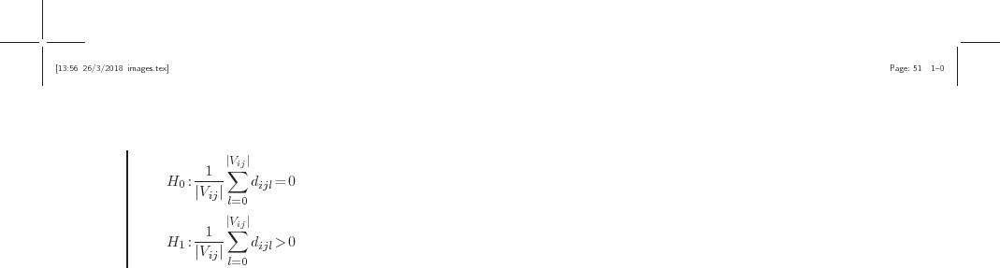 | (6) |
where 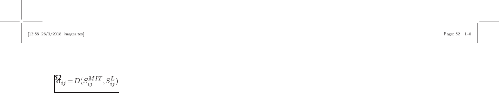 and 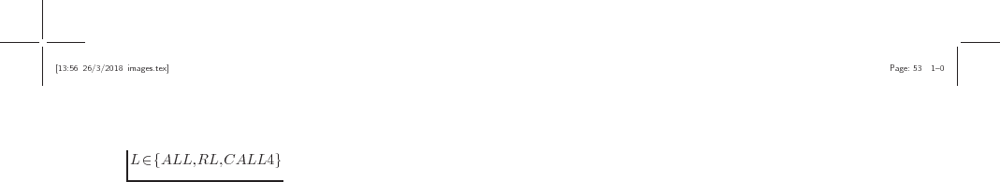.
| 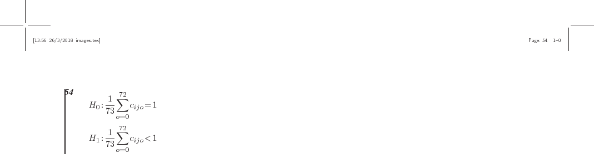 | (7) |
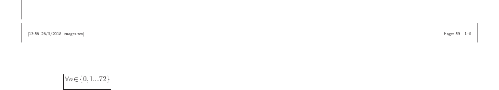
| 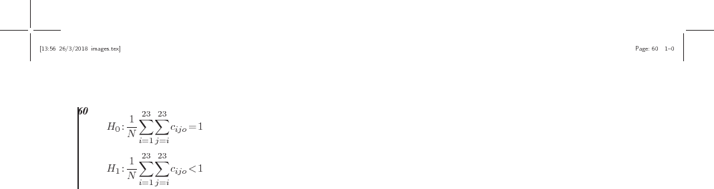 | (8) |
|
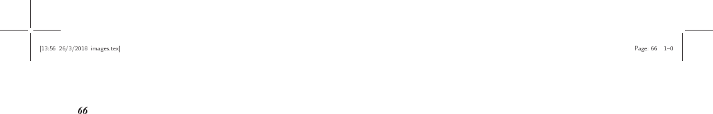 |
We also conducted the same comparison with the same hypothesis among cancer cells.
The results for intra-chromosomal distances and correlations can be found in
figure  . As can be noticed, CALL4 and RL cell
line exhibit a significantly higher average correlations for the majority of
the chromosomes (figure
. As can be noticed, CALL4 and RL cell
line exhibit a significantly higher average correlations for the majority of
the chromosomes (figure  ) and almost in
all orbits (figure
) and almost in
all orbits (figure  ).
).

![\begin{subfigure}
% latex2html id marker 241
[b]{\textwidth}
\includegraphics[width=\textwidth]{figures/orbit-distances_intra.png}
\caption{}
\end{subfigure}](img63.png)